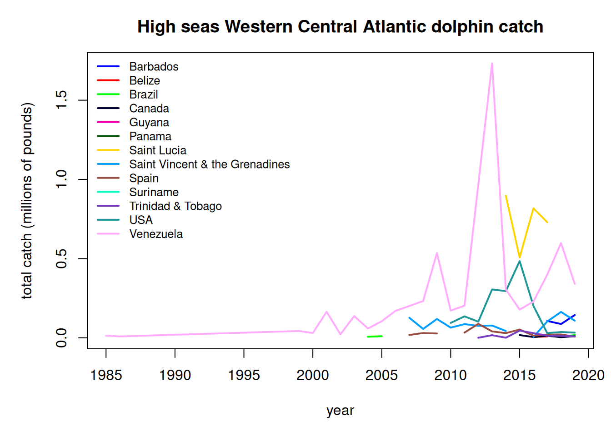
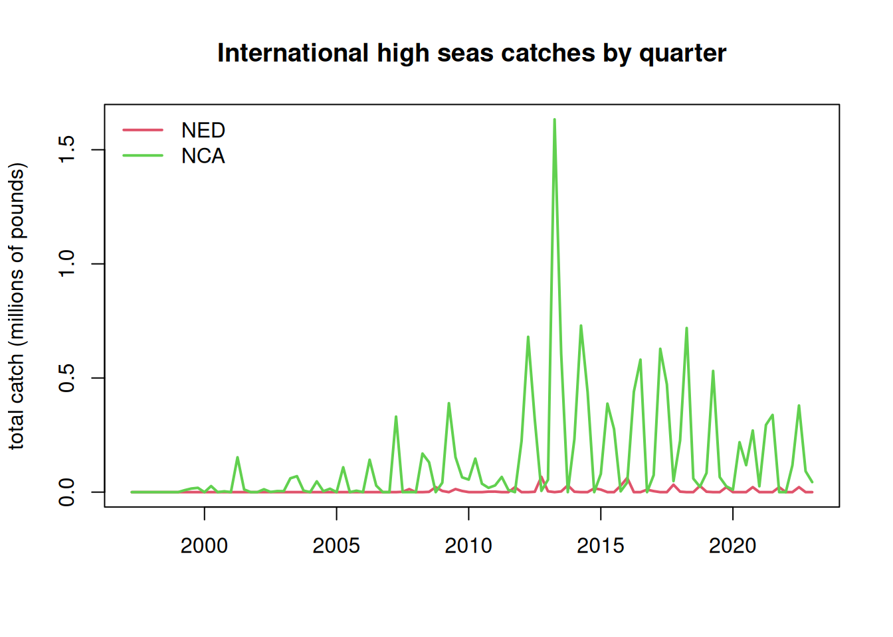

5Analysis of international catches in the high seas
Here we will explore commercial and recreational catch data as estimated by the Sea Around Us Project. This data set includes reported data for fisheries worldwide as well as reconstructed estimates for unreported catches. For each country, project scientists assemble available data on catch and use additional sociological and fishing data plus expert information and opinion, to produce their best estimates of total catch from all fishing sectors and for all species globally.
5.1 Data access and upload
The high seas data are accessed in the Basic Search High seas section of the site. The individual regions can be clicked on (e.g., Atlantic, Western Central) and then the data are downloaded using the Download Data button.
The current version of data in use is version 50.1, accessed June 2024 (the data files can be found on github in the SEFSC-dolphin-analyses/data /SAU/ folder). This was still the most recent version of data available as of September 2025.
5.2 Read in the high seas catches
First we read in the high seas catches for the Western Central Atlantic and Northwest Atlantic zones. These are equivalent to FAO areas 21 and 31.
# clear workspacerm(list =ls())if(!require("pals")) install.packages("pals")library(pals)# find data fileshslis <-dir("data/SAU/")[grep("HighSeas", dir("data/SAU/"))]# identify areas 21 and 31hslis[1]; hslis[3]
We extract the data for dolphinfish and look at the characteristics of the catches. Most of the catches are in the Western Central Atlantic, and the primary fishing entities are Venezuela and Saint Lucia. The fishing sector is all industrial, and the vast majority of the catch is reported landings, with only a tiny fraction of discards or unreported landings listed in the database. The gear type is primarily long line.
# check species name and filter out dolphinfishunique(hs$common_name)[grep("dolphin", unique(hs$common_name))]
[1] "Common dolphinfish"
hs <- hs[which(hs$common_name =="Common dolphinfish"), ]# look at the categories within each column of dataapply(hs[1:13], 2, table)
$area_name
Atlantic, Northwest Atlantic, Western Central
113 160
$area_type
high_seas
273
$year
1985 1986 1999 2000 2001 2002 2003 2004 2005 2006 2007 2008 2009 2010 2011 2012
1 1 1 1 1 1 1 6 4 1 5 10 5 8 10 12
2013 2014 2015 2016 2017 2018 2019
24 22 30 33 33 29 34
$scientific_name
Coryphaena hippurus
273
$common_name
Common dolphinfish
273
$functional_group
Large pelagics (>=90 cm)
273
$commercial_group
Perch-likes
273
$fishing_entity
Barbados Belize
6 3
Brazil Canada
19 18
Guyana Panama
1 1
Saint Lucia Saint Vincent & the Grenadines
5 28
Spain Suriname
80 1
Trinidad & Tobago USA
14 74
Venezuela
23
$fishing_sector
Industrial
273
$catch_type
Discards Landings
5 268
$reporting_status
Reported Unreported
253 20
$gear_type
artisanal fishing gear bottom trawl gillnet
7 9 11
hand lines longline mixed gear
17 187 1
pole and line pots or traps unknown by source
19 9 13
$end_use_type
Direct human consumption Fishmeal and fish oil
5 194 37
Other
37
# convert from metric tonnes to poundshs$pounds <- hs$tonnes *1000*2.20462# produce barplot of key data fieldspar(mar =c(3, 20, 3, 1), mfrow =c(3, 2), mex =0.5)barplot(tapply(hs$pounds/10^6, hs$area_name, sum, na.rm = T), las =2, xlab ="millions of pounds", main ="Area name", horiz = T)#barplot(tapply(hs$pounds/10^6, hs$area_type, sum, na.rm = T), las = 2, ylab = "millions of pounds", main = "Area type")#barplot(tapply(hs$pounds/10^6, hs$year, sum, na.rm = T), las = 2, ylab = "millions of pounds", main = "Year")barplot(tapply(hs$pounds/10^6, hs$fishing_entity, sum, na.rm = T), las =2, xlab ="millions of pounds", main ="Fishing entity", horiz = T)barplot(tapply(hs$pounds/10^6, hs$fishing_sector, sum, na.rm = T), las =2, xlab ="millions of pounds", main ="Fishing sector", horiz = T)barplot(tapply(hs$pounds/10^6, hs$catch_type, sum, na.rm = T), las =2, xlab ="millions of pounds", main ="Catch type", horiz = T)barplot(tapply(hs$pounds/10^6, hs$reporting_status, sum, na.rm = T), las =2, xlab ="millions of pounds", main ="Reporting status", horiz = T)barplot(tapply(hs$pounds/10^6, hs$gear_type, sum, na.rm = T), las =2, xlab ="millions of pounds", main ="Gear type", horiz = T)
We plot the annual catches by fishing entity to look at trends over time.
hs$fishing_entity <-as.factor(hs$fishing_entity)hs$fishing_entity <-droplevels(hs$fishing_entity)par(mar =c(5, 5, 3, 1), mfrow =c(1, 1))tab <-tapply(hs$pounds, list(hs$year, hs$fishing_entity), sum, na.rm = T)matplot(as.numeric(rownames(tab)), tab/10^6, type ="l", col =glasbey(ncol(tab)), lty =1, lwd =2, xlab ="year", ylab ="total catch (millions of pounds)", main ="High seas Western Central Atlantic dolphin catch")legend("topleft", colnames(tab), col =glasbey(ncol(tab)), lty =1, lwd =2, cex =0.8, bty ="n")

Finally we output the subset of high seas dolphin catch for the two areas. Because we have already accounted for the USA catches in our national reporting and are aiming to only summarize international catches here, we filter out the USA catches from the Sea Around Us database.
# write summary to merge with EEZ data write.csv(tab, file ="data/SAU/high_seas_by_year.csv")
5.4 Distribute the high seas catches across quarters of the year
The international catches are only reported as annual catches and do not have any month or season associated with them. However, the MSE operating model requires seasonal catches. The majority of the international catches are caught by longline, so we will assume that the fleet distribution of the U.S. pelagic longline is representative of the seasonality of the international high seas fleets. Now we parse the annual catches according to the seasonality of the U.S. fleet.
At the time of analysis, the SAU database only contained catches to 2019, so we interpolated the 2019 values to cover years 2020 - 2022.
# read in the percentage of the catch by area and year-quarter combinations from the U.S. PLLload("data/outputs/per_PLLcatch_by_area_yearquarter.RData") tab <- tab[which(rownames(tab) >=1997), ] # PLL data are only available from 1997 on #tab[nrow(tab), ]tab <-rbind(tab, tab[nrow(tab), ], tab[nrow(tab), ], tab[nrow(tab), ]) # interpolate 2019 catches for 2020-2022tail(tab)
Atlantic, Northwest Atlantic, Western Central
2017 34806.93 1374259.7
2018 29328.36 885814.8
2019 21870.62 632747.2
21870.62 632747.2
21870.62 632747.2
21870.62 632747.2
NED <- percatch[, , 1] # create matrices for final catch dataNCA <- percatch[, , 1]for (i in1:ncol(percatch)) { NED[, i] <- percatch[, i, 7] * tab[i, 1] # these are the percentages for the NED (Atlantic Northwest) NCA[, i] <- percatch[, i, 1] * tab[i, 2] # these are the percentages for the NCA (Western Central Atlantic) }# plot the parsed out data by year-quarteryrs <-sort(rep(as.numeric(colnames(NCA)), 4))qrt <-rep(1:4, length(yrs)/4)matplot(yrs + qrt/4, cbind(matrix(NED), matrix(NCA))/10^6, lty =1, lwd =2, col =2:3, type ="l", main ="International high seas catches by quarter", xlab ="", ylab ="total catch (millions of pounds)")legend("topleft", c("NED", "NCA"), lwd =2, col =2:3, bty ="n")

# save NED data in this format because it needs to be combined with Canadian EEZ catchessave(NED, file ="data/outputs/NED_year_quarter.RData")
Finally, we format the data in the format for input into the operating model. We only include NCA here, as the NED high seas catches must be combined with international catches in territorial waters of Canada and France in the NED region.
# format for operating modelflt <-rep("Intl", length(yrs))are <-rep("NCA", length(yrs))findat <-data.frame(cbind(yrs, qrt, flt, are, matrix(NCA)))names(findat) <-c("Year", "Quarter", "Fleet", "Area", "Catch_lbs")findat$Catch_lbs <-as.numeric(findat$Catch_lbs)head(findat)